1. Introduction & Getting Started
1.1 What is Basma App?
Basma App is the mobile companion to BasmaCP Admin, the school's web-based administration panel. Everything a school sets up in the admin panel — rosters, timetables, exams, behavior records, news — becomes something a teacher, moderator, parent, or student can see and act on from their own phone, without needing a desktop browser. The app adapts its entire menu to whoever is signed in: a parent never sees a teacher's attendance tools, and a student never sees an admin's roster screens. One installed app, six different experiences depending on the account.
The same account works everywhere Basma is offered: the mobile app, and — for staff and school-admin roles — the web-based BasmaCP Admin panel too, both reading and writing the same underlying school data in real time.
1.2 Signing in
Enter your username and password on the sign-in screen and select Sign in. Credentials are issued by your school's administration office — there is no public self-registration for staff, moderator, or admin accounts (parents and teachers can be invited through a registration link a school admin shares, covered in 4.3). The app remembers accounts you have signed into before, offering a quick-switch row above the sign-in form the next time you open it, so a shared family device can move between a parent's and a student's account without re-typing a password each time.
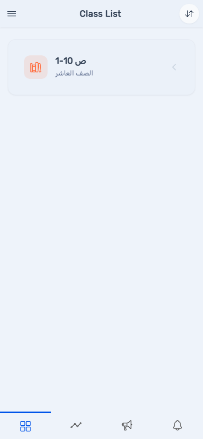
1.3 Switching language
Basma App is fully bilingual and defaults to Arabic on first install. Open the side menu (the icon in the top corner of most screens) and use the Language selector near the top. The entire app — including layout direction — switches immediately; Arabic renders right-to-left, English left-to-right, down to which side the menu itself opens from. The choice is remembered per device.
1.4 Finding your way around
Two navigation surfaces cover the whole app. A bottom tab bar (on roles that have one) switches between the small set of screens you use constantly — class list, news, messages, and so on — without ever leaving that tab group. Everything else — your own schedule, settings, devices, and every management screen — lives in the side menu, opened by the icon in the header. Selecting a side-menu item replaces the current screen outright, so use the menu again (or your device's back gesture) to return to a tab-bar screen afterward.
1.5 Your menu depends on your role
The rest of this manual is organized by role, since that is how the app itself is organized — open the chapter matching your own role (Teacher, Moderator, School Admin, Parent, or Student) rather than reading front to back. A few screens are shared across more than one staff role (Student Report, for instance, appears for both moderators and admins) and are documented once per chapter they appear in, since the surrounding menu — and what makes sense to do next — differs by role.
2. For Teachers
A teacher's app is built around one thing: the classes on your own timetable. Everything in this chapter is scoped to those classes — you cannot see or act on a roster you are not assigned to teach.
2.1 Your class list
The home screen for a teacher lists every class you are currently assigned to, each shown as a card with the class name and a subject icon. Select a class to open its roster for the current period. This screen is also where the app lands you immediately after signing in.
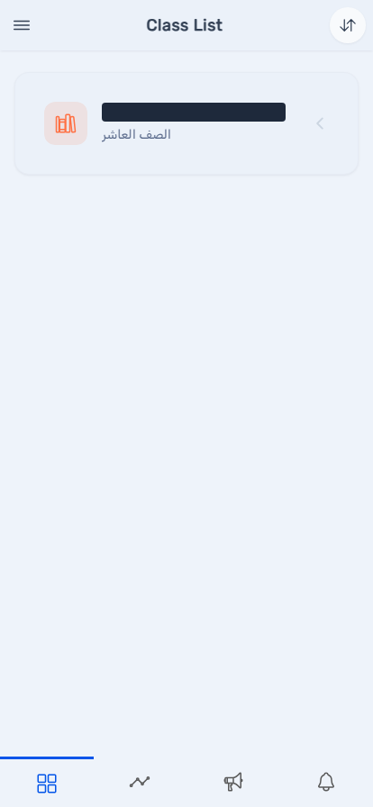
2.2 Taking attendance
Opening a class shows its student roster for the currently active period, with a mark-present or mark-absent control beside each student. If your school's timetable gives you more than one period with this class today, a period selector at the top lets you switch which one you are recording for. Two quick-action buttons let you mark the whole class present or absent in one tap before making individual corrections, and a running tally at the bottom shows how many students are recorded against the class's total so far. Select Save once attendance is complete; a school-configured time window may lock the period against further edits once it has closed, shown as a live countdown while it is still open.
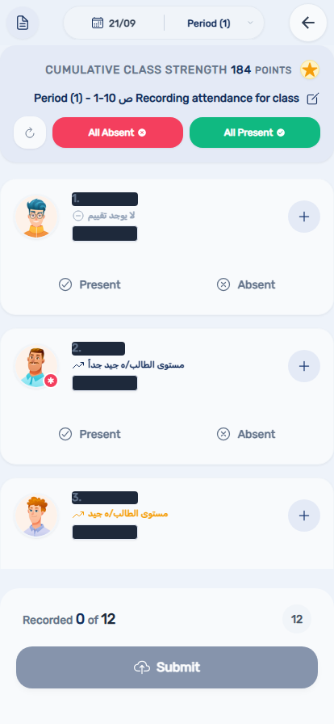
2.3 Viewing a student's profile
Select a student's name or row from the roster (not their photo, which opens a larger avatar view instead) to open their full profile: their current behavior level and title, a skill-excellence breakdown across five tracked traits, total points earned, and any notes recorded against them. This is a read-only view for a teacher — behavior levels and points themselves are set from BasmaCP Admin, not from this screen.
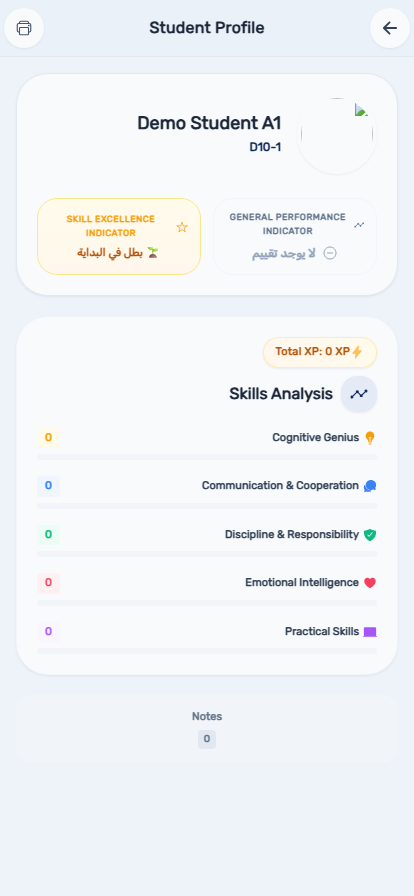
2.4 My Schedule
Your own full weekly timetable across every class you teach, grouped by day and showing the room, subject, and period number for each session. Open it from the side menu's My Schedule entry.
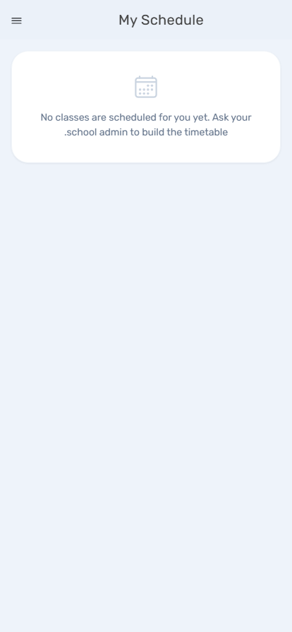
2.5 Coverage requests (substitute teaching)
When your school marks another teacher absent, the substitute rotation offers that teacher's open periods to eligible free teachers — including you — as coverage requests.
- Open Coverage Requests from the side menu.
- Pending requests show the class, subject, period, and the teacher you would be covering for.
- Select Accept or Decline. Declining immediately offers the period to the next fairest available teacher — you are not asked again for that slot, and there is no penalty for declining a period that genuinely conflicts with your own schedule.
- Your response history is shown below the pending list, so you can confirm what you have already accepted for the week.
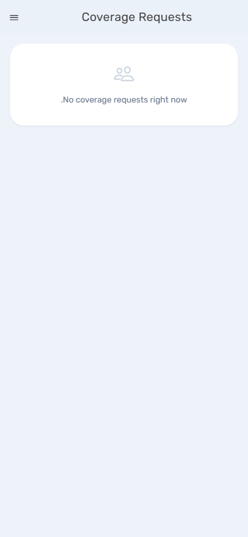
2.6 Exam invigilation duties
A read-only roster of the exam sessions you have been assigned to proctor — date, subject, class, period, and room. Unlike coverage requests, invigilation duties do not need an accept or decline; they are a fixed assignment made from BasmaCP Admin's exam scheduling screen, and this page exists purely so you always have your duty list on hand.

2.7 Following up on students
The follow-up tab (the analytics icon in the bottom bar) opens a per-class picker; choosing a class opens its follow-up list, where you record periodic marks against your school's own custom follow-up fields — for example homework completion, participation, or a reading log — one entry per student. This is separate from attendance and behavior points: follow-up fields are whatever your school has defined them to be, configured from BasmaCP Admin.

2.8 News, notifications & bulletins
Your school's announcements, your personal notification feed, and any circulated bulletins each have their own tab or menu entry. News and notifications are reached from the bottom tab bar; Bulletins lives in the side menu under Follow the bulletins. An unread badge appears on the News tab whenever there is something new.

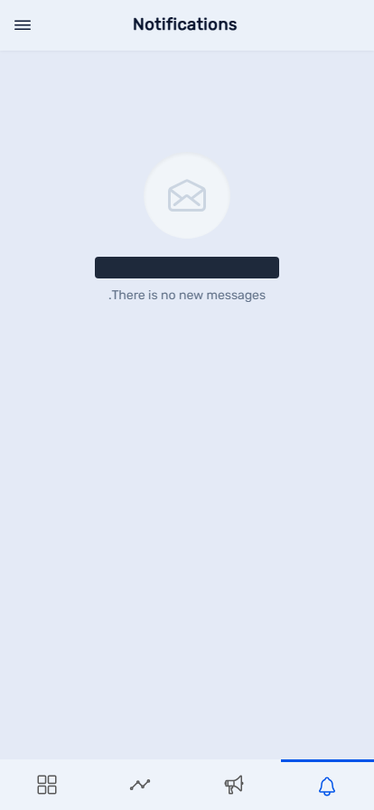
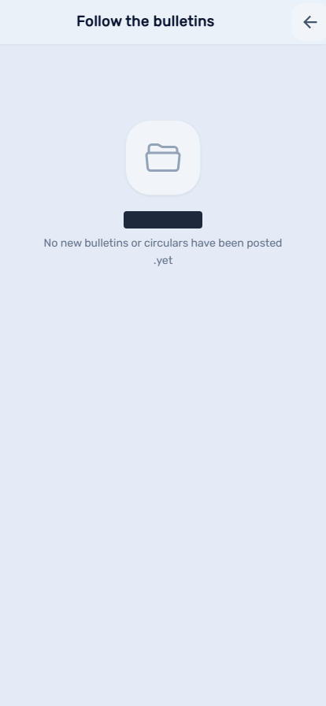
2.9 E-learning
Browse the video and document materials your school has published, organized by category. This menu entry only appears once your school has activated extra features — see 4.9 for how a school admin manages that.

2.10 Settings, devices & account
Manage your profile — name, username, email, and phone — plus notification preferences and app appearance from the side menu's Settings entry. Devices lists every device currently signed into your account, useful for confirming an old phone has actually been signed out. The same menu section also has quick links to About Us and Contact Us if you need to reach Basma support directly.
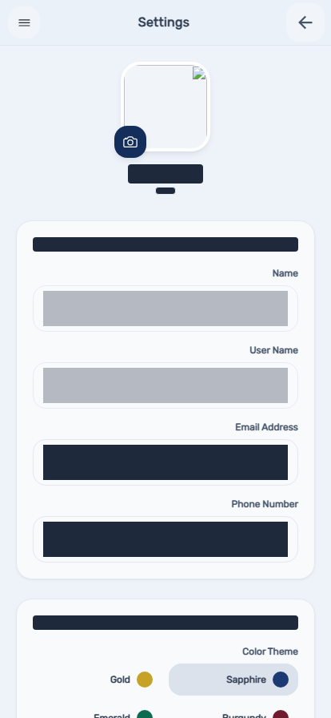
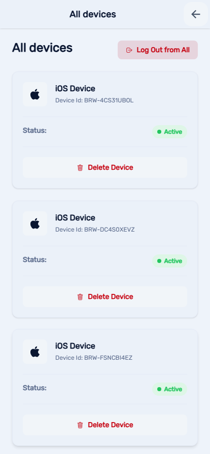
3. For Moderators
Moderators see a supervisory view across classes rather than owning a single roster — you can review attendance, behavior, and delays for any class you are assigned to oversee, without being any one class's own subject teacher.
3.1 Your supervised classes
The home screen for a moderator lists every class you supervise, the same card layout a teacher sees. Selecting a class opens its roster in a review view rather than an attendance-taking one — you are checking the record a class's own teacher has already entered, not creating a new one.
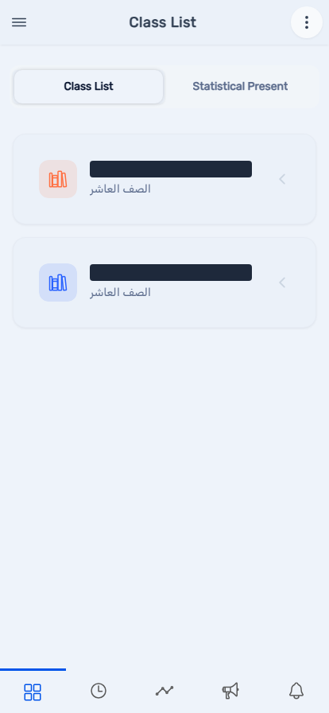
3.2 Delay list
Students marked late at the morning line, across every class you supervise, reached from the bottom tab bar's delay-list tab (not shown to teachers, who only see their own classes' attendance instead).
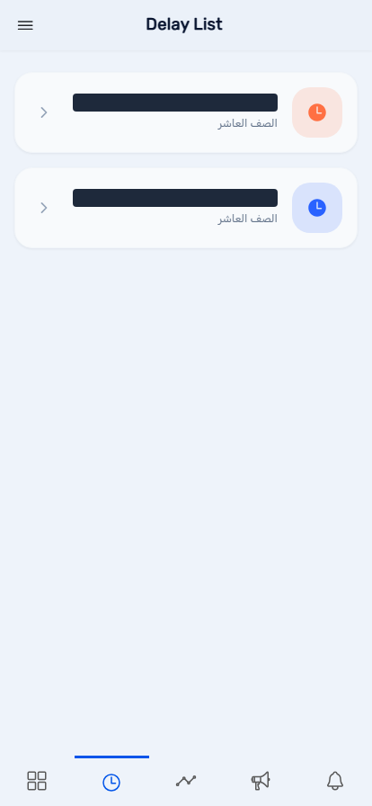
3.3 Following up on students
Works exactly like a teacher's follow-up screen (2.7), but across every class you supervise rather than one you teach: pick a class from the follow-up tab, then record or review marks against your school's custom follow-up fields for that class's roster.

3.4 Student Report
Open from the side menu's Student Report entry. This is a broader summary than the delay list alone — a per-student rollup of attendance, behavior, and warning-threshold standing across the classes you supervise, useful for spotting a pattern before it needs a formal warning report from BasmaCP Admin.
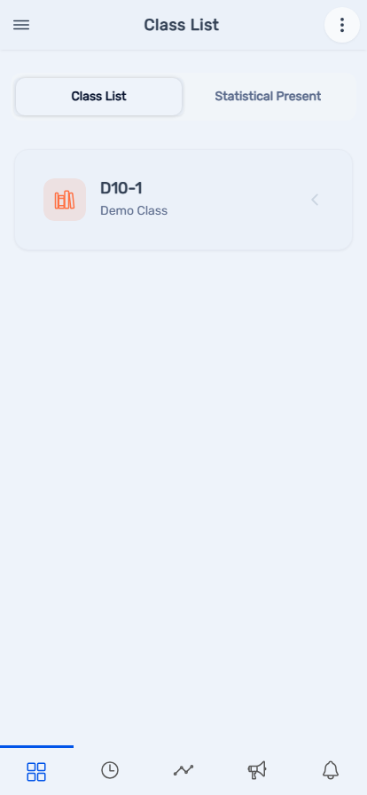
3.5 Absent students
A cross-class view of every student marked absent today, across all classes you supervise. This menu entry only appears if your school has switched it on for moderators (Absent Student visibility is a per-school setting) — if you do not see it, ask your school admin whether it should be enabled.

4. For School Admins
A school admin's mobile menu mirrors the most time-sensitive tools from BasmaCP Admin — the full web panel remains the place for bulk work like imports, timetable generation, and detailed reporting, but everyday roster changes and quick lookups are all here too, for whenever you are away from a desk. This is the same School Admin account BasmaCP Admin's own manual documents; the two apps share one login and one set of data.
4.1 Managing teachers
Open Manage Teacher from the side menu to see every teacher account at your school, searchable by name. Selecting one opens their profile for editing; the + button in the header opens the add-teacher form, where a username and temporary password are set for the new account. The same shared form is used for every staff role this app can create (teacher, moderator, admin) — the role is chosen at the top of the form.

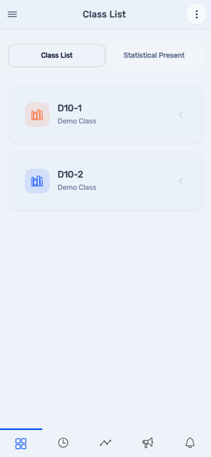
4.2 Managing students
Open Manage Student from the side menu for the same kind of searchable list, scoped to students. From here you can open a student's profile, and — for the roster owner role that can add students — reach the add-student form.

4.3 Managing parent connections
Open Manage Parents from the side menu. This screen is primarily a queue of parents who have registered through your school's public parent-registration link and are waiting to be linked to their child's account — approve one from here, or use the + button to add a parent account manually and link it to a student yourself.

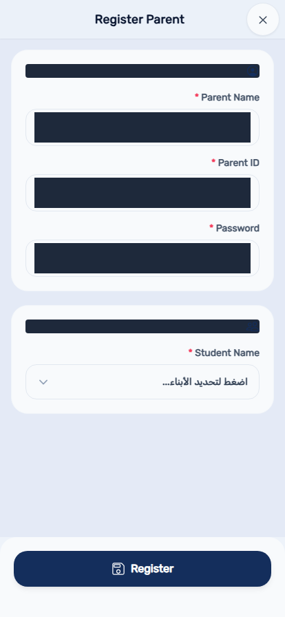
4.4 Creating a class
From your class list, open the options menu (the icon at the top of the screen, next to the search/reorder controls) and select Create class. This opens the same class-creation form BasmaCP Admin uses, so a new section can be added the moment it is decided on, without needing to switch to a browser.

4.5 Users list
Open Users List from the side menu for a single combined directory of every account at your school — teachers, moderators, parents, and students together, rather than the role-by-role screens above. The same + button here opens the shared add-user form described in 4.1.


4.6 Student Report
The same report described for moderators in 3.4 — a per-student rollup of attendance, behavior, and warning standing — but across your whole school rather than a subset of supervised classes, reached from the side menu's Student Report entry.
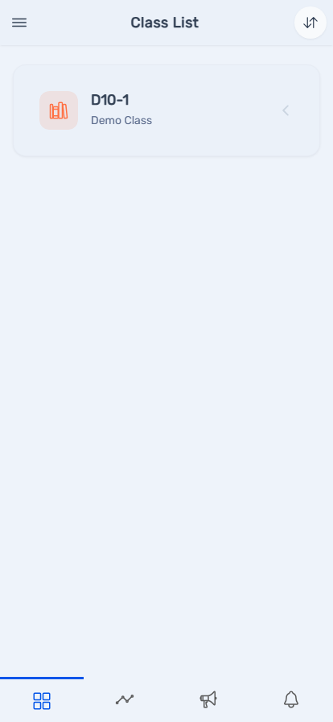
4.7 Exam dates
Open Exam Dates from the side menu for a calendar view of every exam session scheduled at your school. Use it to spot-check the exam calendar without opening BasmaCP Admin's fuller Exam Invigilation planning screen.
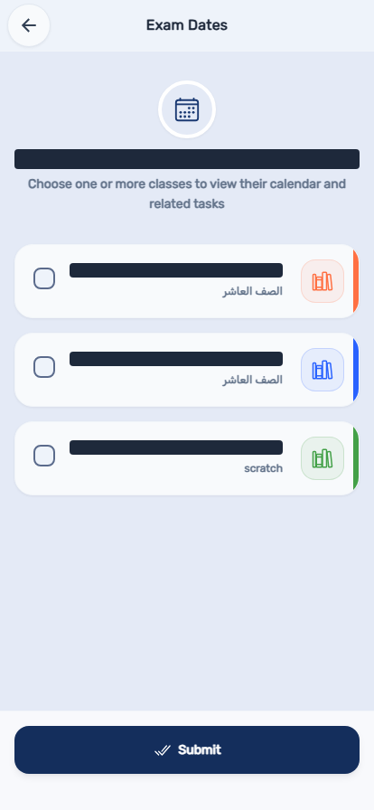
4.8 Parent Connect (school side)
Open Parent Connect from the side menu to see and reply to the same messaging channel parents use to reach your school (see 5.4 for the parent's own side of this conversation).
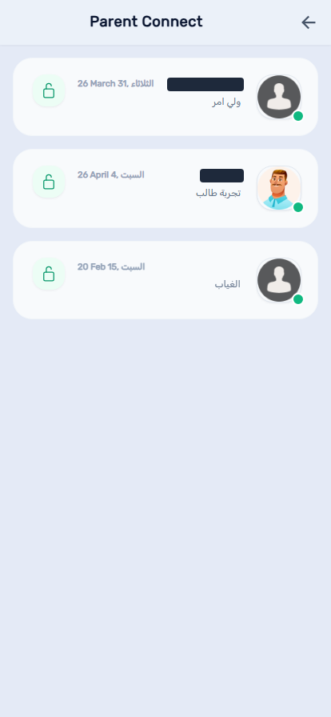
4.9 Activate extra features
Open Activate Extra Features from the side menu to review your school's current plan, activate extra features, or redeem a voucher code your school has been issued — the voucher field is built directly into this same screen, not a separate page. Features gated behind extra features (E-learning is one, see 2.9) unlock automatically for every account at the school the moment they are activated; there is nothing to configure per user.
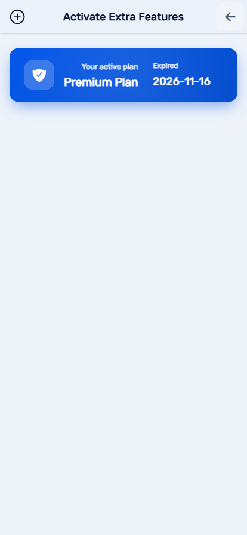
4.10 Contact us
A direct line to Basma's own support team, open from the side menu's Contact us entry — separate from Parent Connect, which reaches your own school's staff rather than Basma.
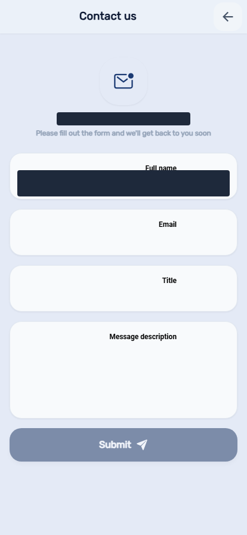
5. For Parents
A parent's account is centered on your own children rather than a class roster — everything in this chapter is scoped to the children linked to your account by your school's admin office.
5.1 Your children
The home screen for a parent lists every child linked to your account, each as a card showing their current behavior level, title, and a running absence count. This is also the screen the app returns you to after opening any side-menu item, since a parent's account has no class-list equivalent to serve as its own home.
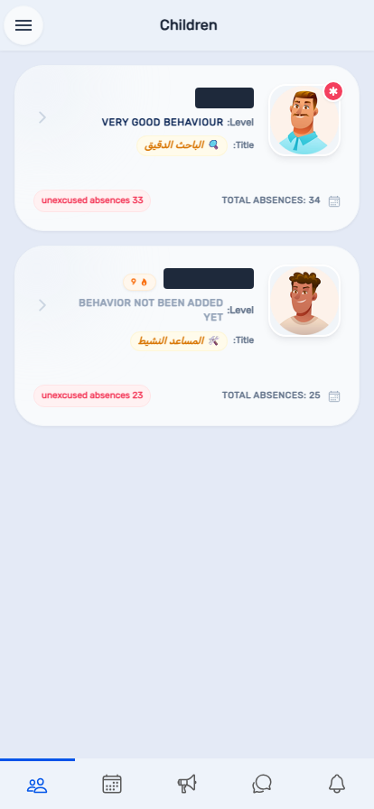
5.2 A child's profile
Select a child's card to open their full profile — the same behavior-level, title, and skill-breakdown view a teacher sees for their own students (2.3), scoped to just that one child.
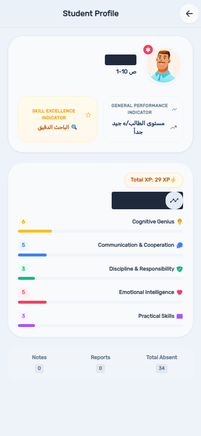
5.3 A child's class schedule
Open from the bottom tab bar. If you have more than one child linked to your account, a picker lets you choose which child's schedule to view; with a single child it opens directly to their weekly timetable.
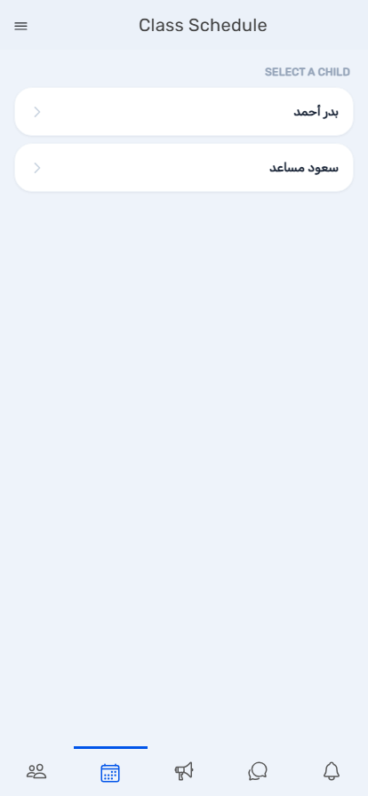
5.4 Parent Connect (messaging staff)
A direct messaging channel with your child's school, open from the bottom tab bar. A badge appears on the tab whenever there is an unread reply waiting. School staff read and respond to these messages from their own Parent Connect screen (4.8).
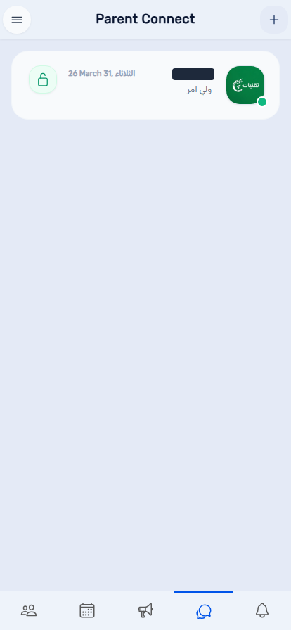
5.5 News & notifications
Your school's announcements and your own notification feed, both reached from the bottom tab bar.
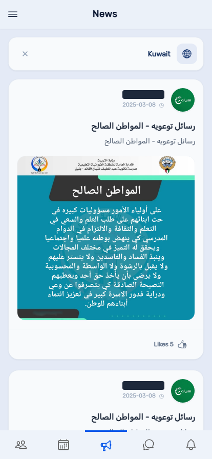
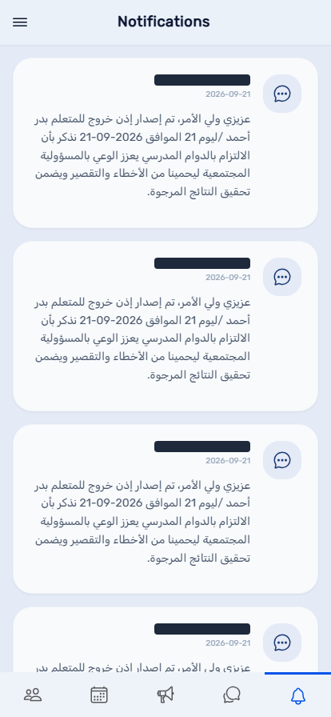
6. For Students
A student's account is entirely read-only and entirely your own — nothing in this chapter lets you see another student's data, and nothing here is something you edit yourself.
6.1 My class schedule
Your own weekly timetable, grouped by day — the screen a student's account opens on the bottom tab bar by default, showing subject, room, and period for each session.

6.2 My titles & achievements
The gamified titles and streaks you have earned through the points system, along with your current behavior level and a breakdown across the same five skill tracks a teacher sees on your profile.
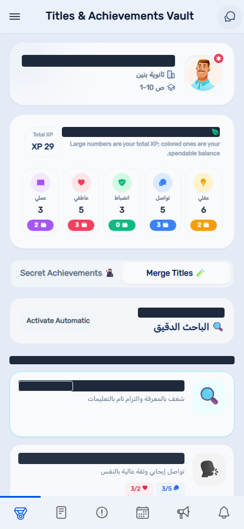
6.3 My notes
Any notes a teacher or moderator has recorded against your own record, in one running list.
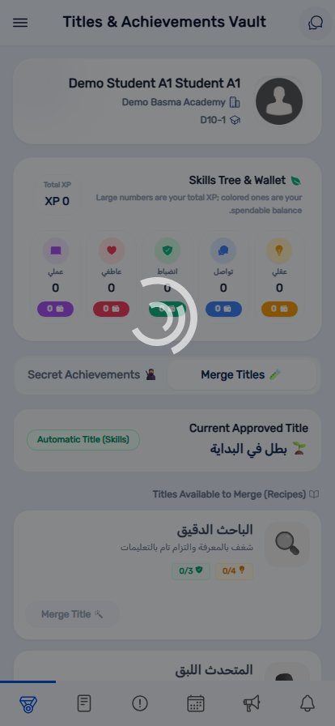
6.4 Warning report
Your own running absence tally against your school's warning thresholds — the same underlying report a moderator or admin reviews across a whole class (3.4), scoped to just your own record.
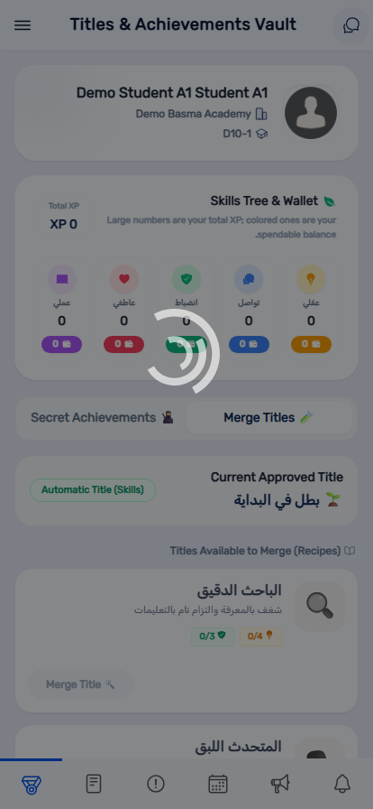
6.5 News & notifications
Your school's announcements and your own notification feed.
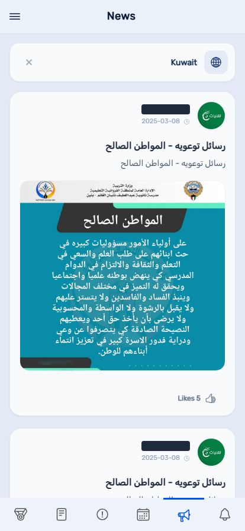
7. Troubleshooting & FAQ
I can't sign in.
Double-check your username and password are typed exactly as issued — usernames are case-sensitive. If you still can't sign in, contact your school's admin office; the app does not offer a self-service password reset.
My class list is empty.
You have not yet been assigned to a class roster. Contact your school's admin office to confirm your class assignment.
I accepted a coverage request by mistake.
Contact your school's admin office — they can reassign the period from BasmaCP Admin's Substitutes screen.
I don't see the language switcher.
It lives inside the side menu (the icon in the top corner of most screens), not on the sign-in page itself — sign in first, then switch. Switching once while signed in also changes the language the sign-in screen itself shows the next time you sign out.
A parent can't see one of their children.
Child-parent links are managed from the school's side — either approved from a pending registration request (4.3) or set up directly — not from the parent's own app. Ask your school's admin office to confirm the link is set up correctly.
I don't see E-learning, or Activate Extra Features, in my menu.
E-learning only appears once your school has activated extra features. Activate Extra Features itself is a School Admin-only tool — teachers, moderators, parents, and students never see it, by design.
A menu item I expect to see (like Absent Students) is missing.
A few menu entries are switched on per school rather than being available everywhere — ask your school's admin office whether that feature has been enabled for your role.
8. Glossary
| Term | Meaning |
|---|---|
| Class list | A teacher or moderator's home screen, listing the classes they are assigned to (teach or supervise, respectively). |
| Coverage request | A substitute-teaching assignment a teacher must accept or decline. |
| Invigilation duty | A fixed exam-proctoring assignment; unlike a coverage request, it needs no response. |
| Follow-up field | A custom per-school tracked item (e.g. homework, participation) a teacher or moderator marks per student, separate from attendance and behavior points. |
| Student Report | A per-student rollup of attendance, behavior, and warning-threshold standing, available to moderators (their supervised classes) and admins (school-wide). |
| Parent Connect | The in-app messaging channel between a parent and school staff. |
| Activate Extra Features | The School Admin screen for activating extra features or redeeming a voucher code; features like E-learning unlock automatically for the whole school once activated. |
| Moderator | Supervisory staff who oversee multiple classes' attendance and behavior without being any one class's own subject teacher. |